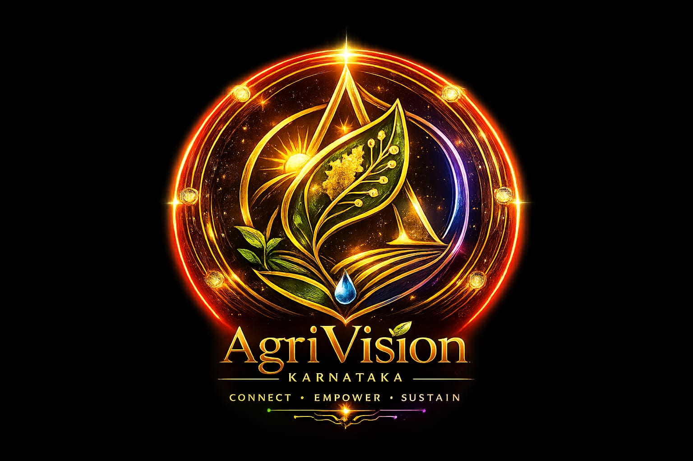

AgriVision KarnatakaAn intelligent ecosystem connecting Farmers, Buyers, Drivers, Labourers, Machinery Owners, Researchers and Sustainability into one digital platform.
Enter EcosystemDistricts Connected
Crops Running
Farmers Registered
Buyers Active
Deliveries Completed
Powering Agriculture Beyond Buying & Selling
A complete AI-powered agricultural ecosystem designed exclusively for Karnataka.
Helping farmers connect directly with buyers, transport, labour and machinery.
AI crop analysis, disease detection, price prediction and smart recommendations.
Integrated transport, live GPS tracking, route optimization and delivery monitoring.
Transparent negotiation, verified users, secure transactions and ratings.
Farmers, Buyers, Drivers, Labour, Machinery Owners, Experts and Researchers working together.
Building Karnataka's most advanced digital agricultural ecosystem for every farmer.
AgriVision Karnataka combines Agriculture, Artificial Intelligence, Logistics, Marketplace, Labour, Machinery, Research, Sustainability and Smart Governance into one connected ecosystem.
Join AgriVision Karnataka and experience the future of agriculture.
Enter Ecosystem